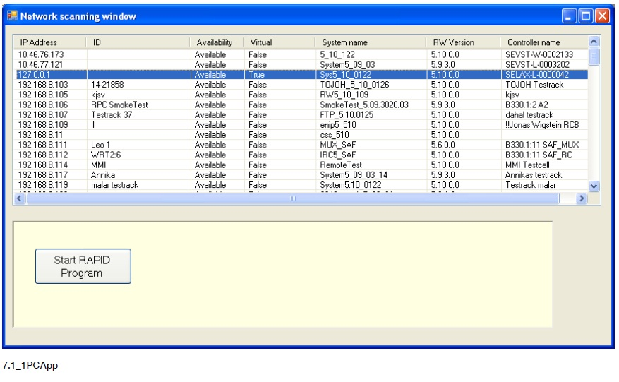

Create a simple PC SDK application
Overview
To get started with programming, create a simple application that displays all the virtual and real controllers on the network. It should then be possible to log on to a controller and start RAPID execution.
Caution
Remote access to controllers must be handled carefully. Make sure you do not unintentionally disturb a system in production.
Setting up the project
Use this procedure to set up a PC SDK project:
On the File menu in Visual Studio, select New and click Project. Select a Windows Application project.
Add a reference to the PC SDK assembly, ABB.Robotics.Controllers.PC.dll, to the project. The default location of this assembly is installation directory.
Open Form1.cs and add the needed namespace statements at the top of the source code page:
using ABB.Robotics.Controllers.PC; using ABB.Robotics.Controllers.Discovery; using ABB.Robotics.Controllers.RapidDomain;In the Solution Explorer right-click Form1.cs and select View Designer. Create the Graphical User Interface according to the instruction in the next section.
Create the user interface
The following screenshot shows the running PC SDK application that we will create. As you see both virtual and real controllers on the network are included in a network scan.

Use this procedure to create the user interface of the application:
Change the Text property of the form to Network scanning window.
Change its Size to 850; 480.
Add a
ListViewcontrol to the form. Set the following properties to get a similar look as in the figure above:FullRowSelect - True
GridLines - True
View - Details
Add the columns for IPAddress, ID, Availability, Virtual, System name, RobotWare Version and Controller name and adjust the width of the columns.
Add a
Panelwith aButtonunder the listview. Set theTextof the button.
Implement network scanning
To find all controllers on the network we start by declaring these member variables in the class:
private NetworkScanner scanner = null;
private Controller controller = null;
private Task[] tasks = null;
private NetworkWatcher networkwatcher = null;
As the application is supposed to scan the network as soon as it is started, we can put the code for it in the event handler, like this:
this.scanner = new NetworkScanner();
this.scanner.Scan();
ControllerInfoCollection controllers = scanner.Controllers;
ListViewItem item = null;
foreach (ControllerInfo controllerInfo in controllers)
{
item = new ListViewItem(controllerInfo.IPAddress.ToString());
item.SubItems.Add(controllerInfo.Id);
item.SubItems.Add(controllerInfo.Availability.ToString());
item.SubItems.Add(controllerInfo.IsVirtual.ToString());
item.SubItems.Add(controllerInfo.SystemName);
item.SubItems.Add(controllerInfo.Version.ToString());
item.SubItems.Add(controllerInfo.ControllerName);
this.listView1.Items.Add(item);
item.Tag = controllerInfo;
}
Add a network watcher
By implementing a NetworkWatcher the application can supervise the network and detect when controllers are lost or added.
This example shows how to program network supervision, and how to add a detected controller to the listview.
After having added a NetworkWatcher object to the FormLoad event handler, we add a subscription to its Found event.
this.networkwatcher = new NetworkWatcher(scanner.Controllers);
this.networkwatcher.Found += new EventHandler<NetworkWatcherEventArgs>(HandleFoundEvent);
this.networkwatcher.Lost += new EventHandler<NetworkWatcherEventArgs>(HandleLostEvent);
this.networkwatcher.EnableRaisingEvents = true;
Note
In C# the event handler skeleton is auto generated using the Tab key twice after “+=” in the above statements. If you prefer, you can use a simplified syntax when using generic event handlers:
networkwatcher.Found += HandleFoundEvent;
Handle event
As the events will be received on a background thread and should result in an update of the user interface the Invoke method must
be called in the event handler. For more information on how to force execution from background to GUI thread,
see Invoke method.
void HandleFoundEvent(object sender, NetworkWatcherEventArgs e)
{
this.Invoke(new
EventHandler<NetworkWatcherEventArgs>(AddControllerToListView),
new Object[] { this, e });
}
This event handler updates the user interface:
private void AddControllerToListView(object sender,NetworkWatcherEventArgs e)
{
ControllerInfo controllerInfo = e.Controller;
ListViewItem item = new ListViewItem(controllerInfo.IPAddress.ToString());
item.SubItems.Add(controllerInfo.Id);
item.SubItems.Add(controllerInfo.Availability.ToString());
item.SubItems.Add(controllerInfo.IsVirtual.ToString());
item.SubItems.Add(controllerInfo.SystemName);
item.SubItems.Add(controllerInfo.Version.ToString());
item.SubItems.Add(controllerInfo.ControllerName);
this.listView1.Items.Add(item);
item.Tag = controllerInfo;
}
Establish connection to controller
When you double-click a controller in the list, a connection to that controller must be established and you must be logged on. Use the following procedure to implement this functionality.
- Generate
DoubleClickevent of theListView. - In the event handler create a
Controllerobject that represents the selected robot controller. - Log on to the selected controller. For more information, see the code sample of Implement event handler.
Implement event handler
This example shows the code of the ListView.DoubleClick event handler:
ListViewItem item = this.listView1.SelectedItems[0];
if (item.Tag!= null)
{
ControllerInfo controllerInfo = (ControllerInfo)item.Tag;
if (controllerInfo.Availability == Availability.Available)
{
if (this.controller != null)
{
this.controller.Logoff();
this.controller.Dispose();
this.controller = null;
}
this.controller = ControllerFactory.CreateFrom(controllerInfo);
this.controller.Logon(UserInfo.DefaultUser);
}
else
{
MessageBox.Show("Selected controller not available.");
}
}
Note
The check to see whether the Controller object already exists is important, as you should explicitly log off and dispose of any
existing controller object before creating a new one. The reason is that a logon session allocates resources that should not be
kept longer than necessary.
Start program execution
The Click event handler of the Start RAPID Program button should start program execution of the first RAPID task.
Starting RAPID execution in manual mode can only be done from the FlexPendant, so we need to check that the controller is in
automatic mode before trying. We then need to request mastership of Rapid and call the Start method. If mastership is already
held, by ourselves or another client, an InvalidOperationException will be thrown. For further information,
see Mastership.
It is necessary to release mastership whether or not the start operation succeeds. This can be done by calling Release() or
Dispose() in a finally clause, as shown in the VB example, or by applying the using mechanism, as shown in the C# example.
private void button1_Click(object sender, EventArgs e)
{
try
{
if (controller.OperatingMode == ControllerOperatingMode.Auto)
{
tasks = controller.Rapid.GetTasks();
using (Mastership m =Mastership.Request(controller.Rapid))
{
//Perform operation
tasks[0].Start();
}
}
else
{
MessageBox.Show(
"Automatic mode is required to start execution from a remote client.");
}
}
catch (System.InvalidOperationException ex)
{
MessageBox.Show("Mastership is held by another client." + ex.Message);
}
catch (System.Exception ex)
{
MessageBox.Show("Unexpected error occurred: " + ex.Message);
}
}